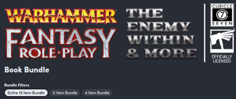

Mars 2024
Des licences ouvertes dans le JDR#
J'ai créé une page assez détaillée pour discuter de ces licences : OGL, ORC, Creative Common.
Vous la trouverez là : les licences "ouvertes" dans le JDR.
Warhammer 4e#
Voilà quelques mois, j'étais chez un revendeur de BDs de la région et ce dernier vend quelques JdRs. J'ai acheté la version 4 de Warhammer Fantasy Roleplay (WFRP) en français. Puis je l'ai rangé sur une étagère après avoir lu quelques pages.
Voilà quelques jours, HumbleBundle proposait pour 25$ toute la nouvelle version de la campagne The Enemy Within. Attention, il ne reste que 7 jours !

J'ai joué cette campagne durant plus de deux ans avec WFRP 1e en français, avec un MJ qui, quelques années plus tard, nous a quitté.
J'ai acquis les PDFs (bien que je n'aime pas ça et que je préfère le papier) et puis j'ai commencé par le début en lisant le Starter Set.
J'aime bien ce jeu pour pas mal de raisons :
- Il est assez facile de rentrer dans l'univers, peut-être est-ce aussi parce que j'y ai joué de nombreuses sessions ;
- L'utilisation de la magie n'est pas complètement folle (elle est réglementée !) ;
- Le système de jeu est top, et je le trouve encore mieux en V4 qu'en V1 ;
- En fait, le jeu est simple parce qu'il est cohérent.
Et puis j'aime bien ce monde assez dur, violent, et sous la menace constante du Chaos. Finalement, j'ai repris la lecture du bouquin de règles en PDF, en anglais cette fois, avec des petites incursions dans le bouquin papier français qui est quand même un beau bidule bien lourd.
Je ne dis pas que je ne ferai pas jouer les petits scénarios du Starter Set. J'en ai trouvé une version physique pas cher sur Vinted. C'est mieux pour les cartes. Il me reste à trouver le bouquin de règles en anglais, parce que, j'ai de plus en plus de mal à me faire aux traductions.
Enfin, les joueurs d'aujourd'hui ne se rendent pas compte : les bouquins sont hyper-luxueux et le contenu est quand même souvent de grande qualité. Quand je vois les vieux jeux, les Grands Anciens comme dirait HPL, je suis impressionné par la qualité :
- Warhammer v4 est un très bon jeu très facile d'accès et toujours aussi expéditif dans les combats (notamment avec la mécanique d'avantage).
- D&D 5e est un très bon compromis entre du vieux et du nouveau, il est moins tactique que la 4e mais reste assez proche de la première édition d'AD&D.
- Call of Cthulhu 7e, c'est toujours du CoC malgré le fait que les caractéristiques soient devenues des pourcentages (mais pourquoi ?)
- J'ai acquis en occase Runequest 4e en anglais et là encore, on est dans le super classique.
Quand on a vécu les premières éditions de tout cela, et les remakes plus ou moins foireux, on est content de ce qui sort aujourd'hui (même si ça coûte toujours beaucoup de sous).
A la réflexion, c'est sans doute un truc de vieux. Après avoir fait plein d'innovations dans les jeux originaux (par exemple Warhammer 3e ou D&D 4e), les éditeurs reviennent aux bonnes vieilles recettes en les remettant légèrement au goût du jour. C'est pour moi ce qu'a tenté de faire Cubicle7 avec la dernière édition de Warhammer.
Enfin, les fans de la première édition ne seront pas déçu : c'est pareil en mieux.
En bonus, le PDF gratuit de conversion de la première édition à la quatrième.
Du SRD, de l'OGL et de l'ORC !#
Hello et bienvenue aux égarés qui regardent parfois cette page !
A l'orée de ce printemps 2024, je me résous à faire une petite bafouille pour... des bookmarks !
Le plus récent : D&D SRD avec bookmarks en français en anglais#

Bon, certes WotC a publié des documents SRDs en anglais et en français, mais les bookmarks ne sont soit pas là, soit en vrac. J'ai corrigé cela avec une petite publication itch.io :
- Un PDF en anglais avec tous les bookmarks,
- Un PDF en français avec les bookmarks réarrangés.
En fait, en regardant sur drivethru, des gens font payer le positionnement de bookmarks sur les documents originaux Wizards. C'est certain que cela représente un certain travail. Mais, comme le contenu (assez important voire énorme) est gratuit, je trouve ça un peu mesquin de faire payer les bookmarks, même si sans bookmarks, c'est chiant de naviguer dans les PDFs.
Bon, enfin, vous avez un truc exploitable pour mobile et tablette, en français et en anglais.
Le SRD de D&D 5e#
Bon, disons-le, c'est un SRD de bonne facture :
- +400 pages de trucs, dont tout ce qu'il faut pour joueur à D&D 5e en anglais et en français ;
- Les règles et beaucoup de contenu ;
- Une traduction pas trop nase et vraiment "officielle".
Petite note : le contenu en mode structuré et hypertexte est disponible sur aidedd.org. Encore une fois bravo pour ce travail de mise en ligne gratuite des différentes sources (basic rules, SRD, etc.)
Encore une fois, je tire mon chapeau à WotC, même si c'est une société américaine avec ses gros défauts (notamment la gestion des talents). Il faut saluer quand même cette volonté de donner à la communauté. Les joueurs ne se souviennent pas (ou n'étaient pas nés), mais c'est pas TSR qui aurait fait ça ! Et en plus, ils livrent +400 Pages en français sans que des gros vilains comme les BBE viennent vous soutirer des sous. Que demande le peuple ?
Oui, je n'aime pas les BBE. Ils ne rappellent la mafia de Casus qui faisait la pluie et le beau temps dans le monde rôlistes des années 80 avec leur ton pourri ironique des "mecs qui n'assument pas de jouer au JdR et qui doivent absolument tourner tout en dérision". Heureusement, Descartes était un peu à l'écart de cette mafia de copains qui, à la française, avait créé un genre de système de copinage où certains en "croquaient" et d'autres non... Beurk...
Pas du tout l'esprit Jeux et Stratégies. C'est pourquoi je m'enorgueillis de ne pas avoir un seul BBE dans ma bibliothèque ! Quand je pense à ce qu'ils ont voulu faire à WotC avec leur plagiat honteux, je ne suis pas surpris.
Bon, enfin, c'est ma compréhension de l'incident. Critiquez les méchants WotC, bonnes gens, mais regardez dans les faits ceux qui mettent à disposition des contenus très épais gratuitement, avec des règles pour faire vos propres produits...